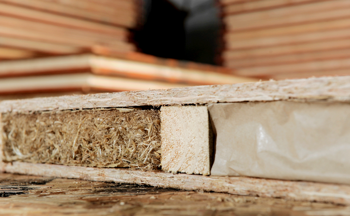

As modern homeowners, Do not just look to improve our investments, but to make a lasting impact on the environment by choosing to use environmentally conscious products when renovating and retrofitting our homes. The benefits of eco-friendly insulation are similar to those of traditional insulation types, with the added value of being safer for the earth and your family.
When choosing an insulation material, another factor for going green is how many resources the substance takes to produce. For example, making sheep wool takes less energy to produce than its synthetic counterpart. As for performance, sheep’s wool has a host of benefits toward insulation: breathability, resilient thickness, natural flame resistance, acoustic blocking properties, inability to settle over time (so it’ll work well for years), and the capacity to absorb air pollutants from other sources in the home.
Adding insulation to your home is the best way to lower your carbon footprint, because the added protection from the elements means you use less energy to heat your home and retain your air conditioning longer. But there are other benefits of eco-friendly insulation too:
A properly designed and installed insulation system offers immediate and long-term benefits. Insulation protects your personnel, your equipment, your system, and your budget.

Most people don't realize that the insulation in their homes, schools, offices or businesses is helping to prevent energy loss in the building, and that in turn is saving energy and reducing overall energy costs. The benefits of insulation can be seen in the energy savings we see in commercial buildings, and the results we see in our homes and businesses.
Insulation is the third most important building material in the world, and it has an enormous effect on the quality of life worldwide. It can be used to insulate homes and buildings, and also to insulate the environment from the harmful effects of the sun and climate change. What makes insulation such a complex material is that it is mixed with all sorts of other materials, and in many different ways. From its chemical makeup to the way in which it is held together in a wall or in a building, there is a lot to learn about how it works and how it affects our lives.
Insulation is the easiest way to ensure energy efficiency in your home or business. The best insulation is the one that you don’t even notice. All kinds of insulation, including spray foam insulation, can help insulate your house or business. Insulation helps regulate temperature by blocking warm air from flowing out and cold air from flowing in. Although insulation can help to regulate temperature, it can’t prevent deterioration of the structure. A properly designed and installed insulation system can help to prevent temperature variations.
As responsible Earth dwellers, preserving the planet rests upon the inhabitant’s shoulders. Turning your home or real estate property more eco-friendly is a must. Insulation suppliers Melbourne can make it happen with great quality insulation materials.